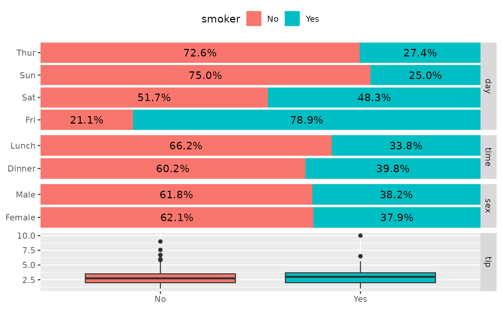
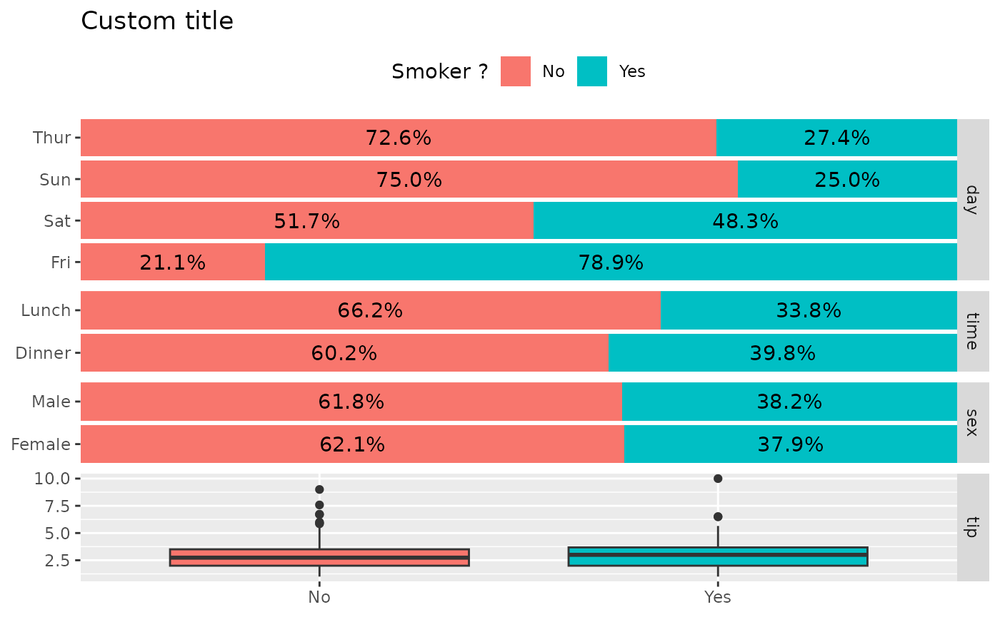
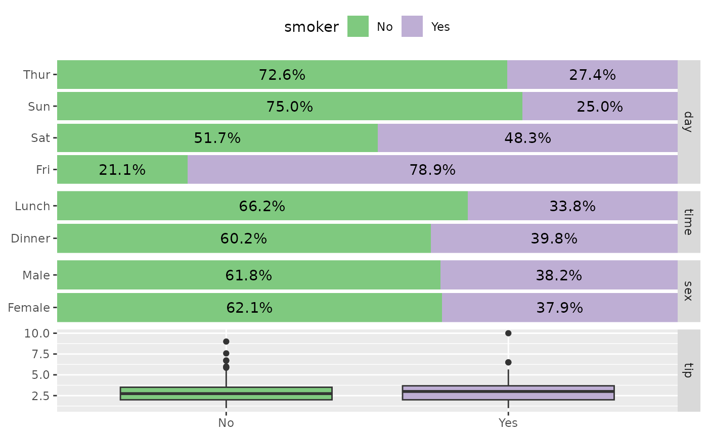
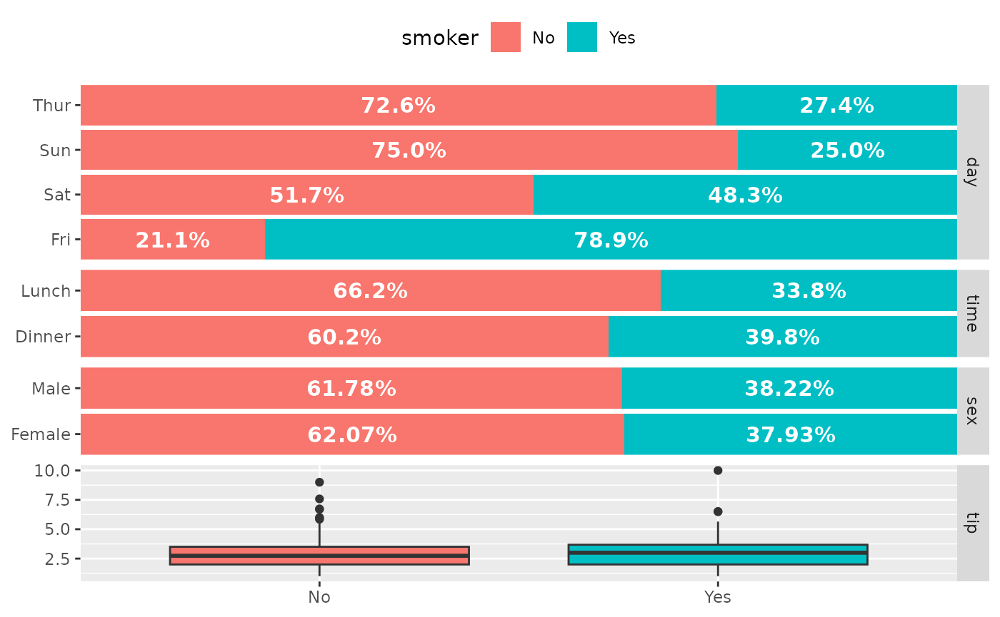
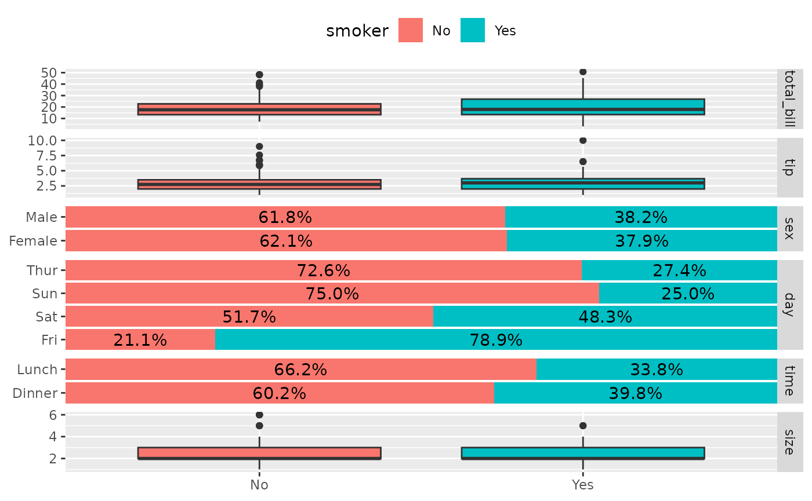
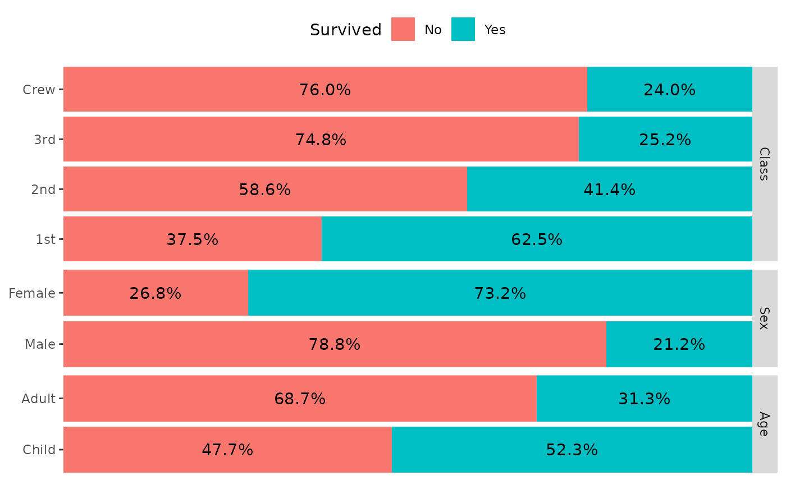
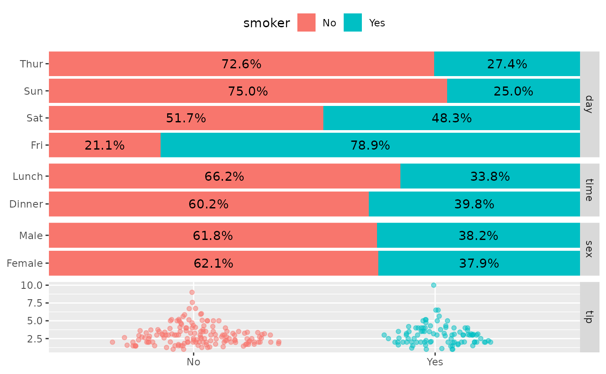

ggbivariate(): Plot an outcome with several potential explanatory variables
Joseph Larmarange
May 16, 2016
Source:vignettes/ggbivariate.Rmd
ggbivariate.Rmd
library(GGally)
#> Loading required package: ggplot2
#> Registered S3 method overwritten by 'GGally':
#> method from
#> +.gg ggplot2
GGally::ggbivariate()
The purpose of this function is to easily plot a visualization of the bivariate relation between one outcome and several explanatory variables.
Basic example
Simply indicate the outcome and the explanatory variables. Both could be discrete or continuous.
data(tips, package = "reshape")
ggbivariate(tips, outcome = "smoker", explanatory = c("day", "time", "sex", "tip"))
ggbivariate(tips, outcome = "total_bill", explanatory = c("day", "time", "sex", "tip"))If no explanatory variables are provided, will take all available variables other than the outcome.
ggbivariate(tips, "smoker")
Customize plot title and legend title
ggbivariate(
tips, "smoker", c("day", "time", "sex", "tip"),
title = "Custom title"
) +
labs(fill = "Smoker ?")
Customize fill colour scale
ggbivariate(tips, "smoker", c("day", "time", "sex", "tip")) +
scale_fill_brewer(type = "qual")
Customize labels
ggbivariate(
tips, "smoker", c("day", "time", "sex", "tip"),
rowbar_args = list(
colour = "white",
size = 4,
fontface = "bold",
label_format = scales::label_percent(accurary = 1)
)
)
Choose the sub-plot from which to get the legend
ggbivariate(tips, "smoker")
ggbivariate(tips, "smoker", legend = 3)
Use mapping to indicate weights
d <- as.data.frame(Titanic)
ggbivariate(d, "Survived", mapping = aes(weight = Freq))
Use types to customize types of subplots
ggbivariate(
tips,
outcome = "smoker",
explanatory = c("day", "time", "sex", "tip"),
types = list(comboVertical = "autopoint")
)
For more customization options, you could directly use ggduo() (see also vig_ggally("ggduo")).